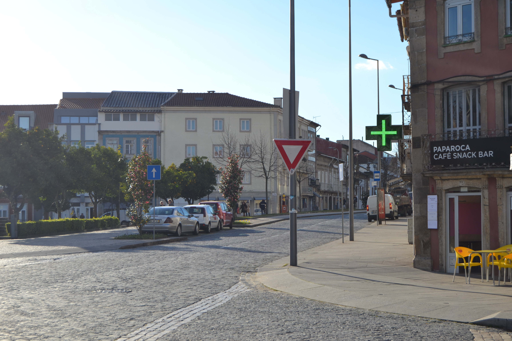
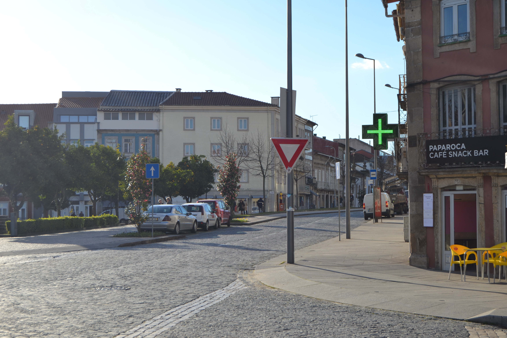
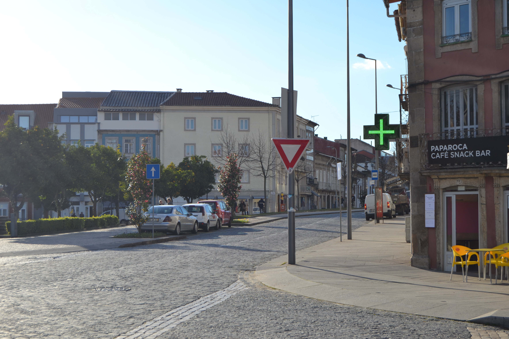
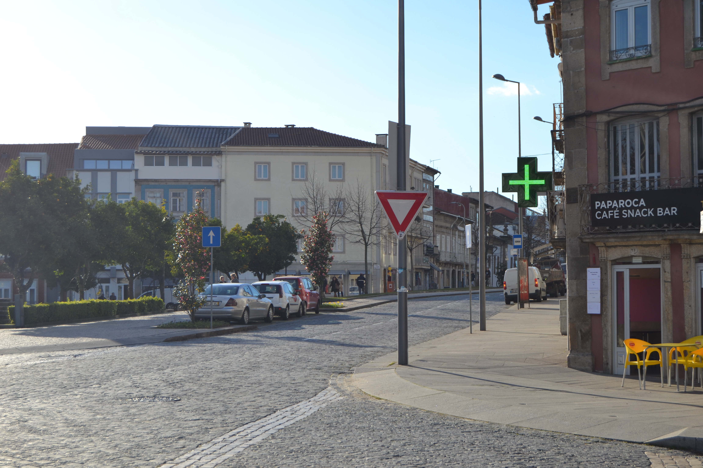

Grande espaço aberto em frente à porta de Souto Corredoura Senhora a Branca S.Victor Chaves Bom Jesus
Nos inícios do séc. XVI porta do Souto Santa Maria a Branca
Era a transformação deste local em amplo espaço urbano. Até essa data apenas existia a capela de S.Gonçalo, fundada poucos anos antes, em 1500 rua da Corredoura
Com a construção de uma casa «à porta do Souto
Em 1652 recolhimento das Beatas da Penha de França 1720
Passados 34 anos instalaram-se aqui os Oratorianos 1689 1739-1766
Em 1722 Recolhimento das Convertidas
Com todas estas instituições, onde nos permitimos salientar os Oratonianos campo de Santa Ana
Em 1750 rua de Águas
No extremo Sudeste está o convento dos Congregados
Não deixa de ser curioso assinalar que quando na segunda metade do séc.XIX
Das 8 casas do lado Norte e 20 do Sul, eram prazos do Cabido
O campo de Santa Ana avenida Central
Uma parte do quintal desta casa é pertença do prazo do casal dos Chãos ou Quinteiro, sito na freguesia de S.José de S.Lázaro, à face do qual está subemprazado.
Uma parte do quintal desta casa é pertença do prazo do casal dos Chãos ou Quinteiro, a face do qual está subemprazado.
Uma parte do quintal desta casa é pertença do prazo do casal dos Chãos ou Quinteiro, à face do qual está subemprazado.
Confronta, do poente, com casa foreira ao Convento de Vilar de Frades
Uma parte do quintal desta casa é pertença do prazo do casal dos Chãos ou Quinteiro, à face do qual está subemprazado.
Uma parte do quintal desta casa é pertença do prazo do casal dos Chãos ou Quinteiro, à face do qual está subemprazado. A casa e a parte sul do quintal pagam foro ao mosteiro de Vilar de Frades. rua de S.Gonçalo
Rua das Águas campo da Rua das Águas Caminho Novo
A casa e a outra parte do quintal não são foreiras ao cabido
Sta. Maria de Covelo Rua das Águas Caminho Novo
A casa e a outra parte do quintal não são foreiras ao cabido
| Número de porta | Enfiteuta |
|---|---|
| 1 | D.Agostinha de Barros Gavião, enfiteuta principal do casal dos Chãos ou Quinteiro, sito na freguesia de S.José de S.Lázaro |
| 2 | D.Agostinha de Barros Gavião, enfiteuta principal do casal dos Chãos ou Quinteiro, sito na freguesia de S.José de S.Lázaro |
| 3 | D.Agostinha de Barros Gavião, enfiteuta principal do casal dos Chãos ou Quinteiro, sito na freguesia de S.José de S.Lázaro |
| 4 | D.Agostinha de Barros Gavião, enfiteuta principal do casal dos Chãos ou Quinteiro, sito na freguesia de S.José de S.Lázaro |
| 5 | D.Agostinha de Barros Gavião, enfiteuta principal do casal dos Chãos ou Quinteiro, sito na freguesia de S.José de S.Lázaro |
| 6 | Manuel Fernandes Lima |
| 7 | Manuel Fernandes Lima |